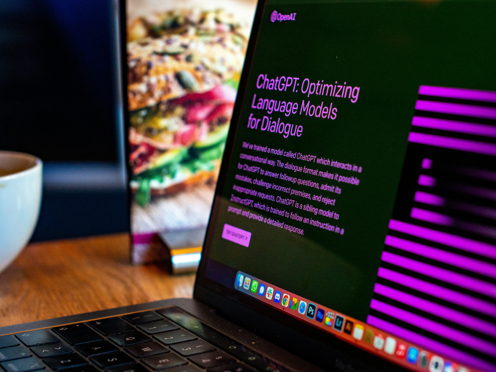

Strategic Integration of GenAI in Organizations
Our research project at Aarhus University’s Department of Business Development and Technology examines how organizations strategically integrate generative AI (GenAI) into their business operations. We examine how companies transition from early experimentation with GenAI tools to broader, strategic implementation across departments and processes.
Through in-depth case studies, we explore what drives organizations to adopt GenAI, how integration unfolds in practice, and what challenges and opportunities arise along the way. We are particularly interested in how different configurations of technologies, strategies, and organizational practices shape the outcomes of GenAI adoption.
To capture these experiences, we conduct interviews and workshops with key stakeholders, including managers, employees, and technical teams involved in GenAI initiatives. The insights gathered will help participating companies and the wider business community identify effective strategies and pitfalls to avoid when using GenAI to drive innovation and growth.

Research purpose
- Understand how companies move from experimentation to strategic use of GenAI
- Identify organizational, strategic, technical, and cultural factors that influence success
- Determine drivers and challenges of strategic GenAI integration
- Develop practical insights and best practices useful for industry and research alike
What does participation involve?
- Interviews (45–60 minutes) with stakeholders
- Remote/Onsite participation
- Stakeholders: CTO/Head of IT, Team Leads (Software/IT), AI/ML units, AI developers/engineers
- Short follow-up conversation for validation of analysis results
- If possible, share internal documents about your GenAI strategy
Participant's input
- Sharing your firsthand experience of adopting and integrating GenAI in your organization
- Discussing what drives sustainable and responsible GenAI integration in your context
- Reflecting openly on both successes and challenges encountered along the journey
Participant's benefits
- On-site results workshop to reflect on integration activities and recommendations
- Receive a brief summary report of insights from across participating organizations
- Gain early access to emerging best practices in GenAI integration
- Contribution to shaping responsible and effective GenAI use in business
Confidentiality and ethics
- All interviews and discussions will be fully anonymized, and we will not disclose your name or any identifying details
- Your involvement in this study is entirely voluntary, and you can withdraw your participation later
- Our research complies with the ethical guidelines of Aarhus University
Research Team
Juliane Möllmann
Postdoctoral Researcher, Aalto University & Aarhus UniversityJuliane explores how organizations adapt innovation and knowledge‑exchange practices in response to emerging technologies, including GenAI. Her research focuses on self‑strategizing and innovation in complex, technology‑driven environments, drawing on deep expertise in corporate–startup collaboration and qualitative methods. She brings nearly a decade of industry experience as an innovation manager, solution engineer, and technical consultant.
Madalina Pop
Assistant Professor, Aarhus UniversityMadalina studies how emerging technologies—especially GenAI and open‑source software—transform organizational strategizing and collaboration. Using longitudinal ethnographic approaches, she examines how humans and intelligent systems coordinate complex innovation processes. She co‑leads the Free and Open Source Software research group and contributes to interdisciplinary initiatives across AI, strategy, and digital transformation.
Get in touch
If you are interested in participating or have any questions about the project, please feel free to reach out to us. We would be happy to discuss the project in more detail and explore how your organization can benefit from participating.